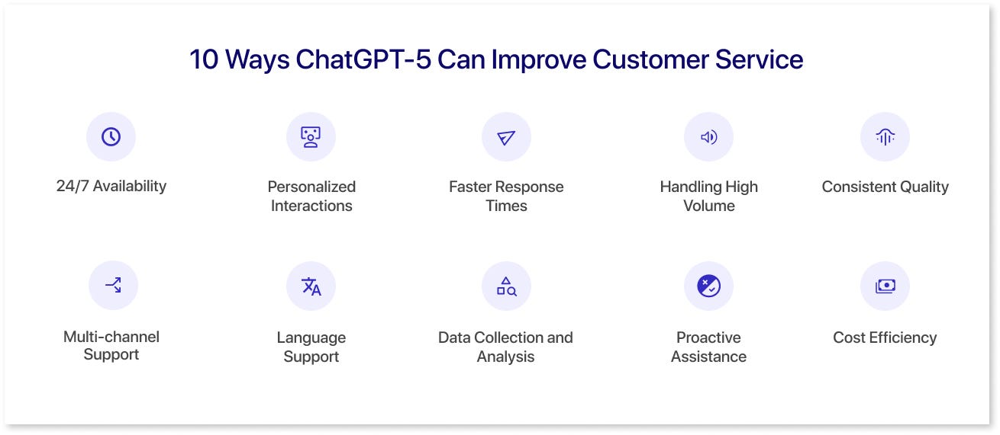

ChatGPT — це потужний AI-асистент, розроблений компанією OpenAI, який допомагає користувачам працювати з текстом, ідеями, кодом, навчанням та різними повсякденними завданнями.
ChatGPT може відповідати на запитання, генерувати тексти, пояснювати складні теми, допомагати з програмуванням та створювати нові ідеї для роботи, навчання і бізнесу.
ChatGPT — це сучасна мовна модель штучного інтелекту, створена компанією OpenAI. Вона використовує технології машинного навчання для аналізу тексту, розуміння контексту та генерації змістовних відповідей.
ChatGPT може працювати як універсальний цифровий помічник для навчання, роботи, програмування та створення контенту.

Основні можливості ChatGPT:
генерація тексту
пояснення складних тем простими словами
допомога з програмуванням
створення ідей та креативного контенту
аналіз інформації та підготовка резюме текстів
📝 Створення та редагування текстів
ChatGPT може допомагати створювати різні види текстового контенту: від коротких описів до повноцінних статей. Також інструмент здатний редагувати текст, покращувати стиль написання.
📊 Робота з інформацією
ChatGPT може обробляти інформацію, знаходити ключові ідеї в текстах, порівнювати різні дані та допомагати формувати логічні висновки. Це робить інструмент корисним для навчання, досліджень та аналітики.
💻 Підтримка програмування
Інструмент може допомагати розробникам писати код, пояснювати принципи роботи алгоритмів, знаходити помилки у програмі та пропонувати можливі варіанти оптимізації, прискорює написання коду.
Приклади промтів
🎓 Освіта
«Поясни простими словами, що таке машинне навчання і як воно працює»
🚀 Підприємництво
«Запропонуй декілька ідей для онлайн-бізнесу у сфері технологій»
🎨 Творчість
«Створи ідею сценарію для короткого відео про розвиток штучного інтелекту»
🧑💻 Програмування
«Напиши приклад простого JavaScript коду для зворотного відліку часу»
Виберіть AI інструмент:
Цікаво знати:
🤖 AI здатен писати музику, яку можна слухати та виконувати живими музикантами.
🌌 Деякі AI-моделі створюють космічні пейзажі, які виглядають реалістично.
🧠 Деякі нейромережі навчилися грати в відеоігри краще за людей, інколи роблячи речі, які люди не передбачали.
.png) AI Tools Guide
AI Tools Guide